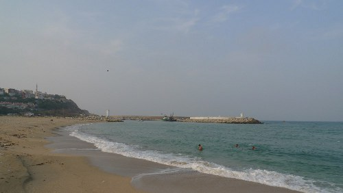
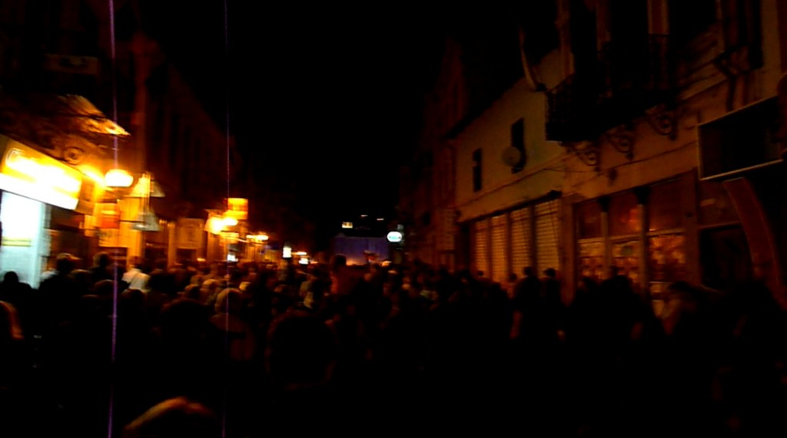

End of the trip, now some relaxing in and around the city for a while…
The picture is from right before the Galata Bridge, where every bit of space is taken up by fishing people.
The final distance turned out to be a little bit longer than expected:
Oct 07
End of the trip, now some relaxing in and around the city for a while…
The picture is from right before the Galata Bridge, where every bit of space is taken up by fishing people.
The final distance turned out to be a little bit longer than expected:
Oct 07
The getting up so early in the morning (using the adhan from the Mosque as alarm-clock) payed off: beautiful sunrise over the Asian hills on the other side, and the traffic was very calm as well. No ordeals like other cyclists coming in from the South have reported.
Oct 06
Being so close to the entrance of the Bosporus, I decided to have a walk so that I could actually see the Asian side as well. Well, it turned out to be a little bit further than I thought and I had to turn back for lack of water. The first sight of Asia will have to wait till tomorrow. The views were good though, with all the waiting ships out on the sea.
Oct 04
After the hardest day on the trip so far, I have now reached the Northern entrance of the Bosporus, only 30 kilometers to go to Istanbul. From the moment I took the exit of the highway, the slopes I had to climb have been crazy. Mostly too steep for cycling, I had to push the bike up many times. In the end I did make it and put the tent up at the local small campsite.
The plan is to relax around the campsite in Kumkoy for a few days and then to cycle into Istanbul in the early morning this Sunday, hopefully avoiding the crazy traffic there.
Oct 03
In Turkey, it has been very difficult to communicate to the people, especially in the places that I have visited so far, away from the main tourist destinations. Sometimes, people try to use modern technology such as Google Translate. This happened to me in a restaurant where I was trying to order something to eat. Unfortunately, even Google Translate was not able to help in this case, producing un-understandable sentences.
The reason for this seems clear when flicking through the 80 or so channels on the TV here: only one was in English. It makes me wonder how they can use the internet though. They must still be living in their own bubble i guess.
The best way to get around this, is to ask things to 12-year old kids. They usually do speak English and are always happy to help the lost stranger.
Oct 03

Oct 02
I am on my own again, because I don’t want to spend 1.5 weeks in the big city. Today was a short day, with only 65 or so kilometers to Saray, a small town (the last real town according to my map) on the way. There finally are some clouds in the sky, which makes the cycling a lot easier, well, if you don’t mind climbing big hills all the time… I have gotten used to that, so the hills no longer are a problem. I just have to creep up very slowly with my loaded bike. The wind was also pretty calm, so I arrived early enough to have a look around in Saray.
Oct 01
After our midday-break, the wind was still ferocious, and still right from the front. Because of this, and another stop to eat some fresh water-melon that we found in a field, we only carried on for another 20-30 kilometers before finding a good spot to camp for the night and prepare dinner.
Oct 01
Together with two German cyclist whom I met on the road this morning. They are also cycling to Istanbul, but need to be there on Sunday (which is easily possible). The heat, but especially the wind was extraordinary today: right from the front and strong. After only 60 kilometers, it felt like we had done double that distance. The rest in a park in Kirklareli was good for getting some energy back (while having a cold drink, some kebab and an ice-cream). We decided to cycle a bit further after this, and then to camp somewhere in a nice spot along the way.
Sep 30
Today I dressed sort-of properly, for visiting some of the mosques in Edirne. The Selimiye Mosque is certainly the most impressive of them and is said to be a greater technical achievement then the Ayasofya Mosque in Istanbul: It has a dome that is 43 meters above the floor, with a diameter of 31 meters. In one word: huge.
For lunch, I had some delicious baklava, that was as much of a joy to look at as it was for the taste-buds:
Sep 29
The picture shows it all: Food, lights, water, traffic, people… And still 28 degrees. Really quite an exotic experience so far. A nice but tiring experience, especially after such an early rise. Will sleep well.
Sep 29
Because of another day of sweltering heat, I had breakfast at sunrise and was on my way not long after that. The highway trough Greece was wide but there were no cars to speak of. The only Greek town I came through was the nice-looking Kastanies, right on the border to Turkey.
Out of Bulgaria, into and out of Greece was easy. Into Turkey turned out to be easy as well, but took almost 2 hours of waiting because of a computer problem that shut all Turkish bordercrossings down… After that it was only 10 or so kilometers into Edirne, which feels like a totally different world again: it is one busy mess of taxis, cars, dolmus busses, horse-drawn taxis with loud music playing and of course many stunning mosques. A mix of Europe and Asia that is nice as a starter into real Turkey.
Sep 28
When I looked out of the tent door this morning, the decision was very easy: this place is too nice to leave after just one day. I spent the day reading, walking into and around the village and talking to the (British) owner of the campsite. A short nap around the hottest hours of the day, a shower and a visit to the restaurant and that was pretty much it. Super-relaxed. One note about the restaurant: I have now had both meals they have on order: pork and chicken. Tomorrow it is really time to move on…
Sep 27
After about 100 kilometers at temperatures over 32 degrees, the modern-looking campsite sign was a very welcome sight. My tent is now pitched in the village Biser, about 20 kilometers before the Greek border. The village is very sleepy and was severely affected by some flooding last spring, but the area around it is nice, as was the dinner that I had in the local restaurant.
The waiting moments before dinner is served are always useful for some journal-writing and planning for the next day. My next day will probably be quite short, with a few kilometers through Greece, and then on to Turkey.
Sep 26
After a descent from the mountains on phenomenally good roads, I passed a small hotel at the side of a lake. Because there is no need to rush anymore, the decision was easy to stay here for a night and have a relaxing afternoon reading at the side of the lake, near the village of Panicherevo.
Sep 26
It was pretty tough-going for a while, with speeds around 8 kilometers per hour in the first gear (I had been riding without it for a few days, but was very happy that the first gear was usable again after my tie-wrap repair of the derailleur’s broken “B” screw yesterday) and many resting moments, but I finally made it to the top of the pass without having to push. Suddenly there were two restaurants around the corner where I could replace all the lost sweat with a nice big, cold drink.
Looking back, the climb turned out to be less difficult than I had feared. This must have been the hardest bit of the whole trip, so the rest should now be fairly easy.
Sep 25
After three days of relaxing in the fantastic Nomads Hostel and exploring the beautiful town of Veliko Tarnovo, it is time to move on. Tomorrow I will finally see if I am really fit enough to cross the mountain range that separates me from Greece and Turkey… I will miss the beautiful breakfasts and dinners though.
Sep 23
With a breakfast like this, the first of my at least two resting days in Veliko Tarnovo had a fantastic start: All fruit, vegetables, honey, cheese, yoghurt and bread are homegrown or made.
I have been reading a book in the park, which was very nice for a change. 30 degrees is pretty warm to be doing anything else really…
Sep 23
This is why Bulgarian police pulls drivers from the road who are driving in a straight line: They must be very drunk for not swerving around the holes in the road…
Sep 22
My arrival in the very picturesque town of Veliko Tarnovo was by accident on the Bulgarian Independence day, as I learned two villages before my arrival while asking for directions. They predicted some accommodation problems, which is what happened: hostel fully booked. It was very nice that they let me sleep on the floor for one night, I’ll have a proper bed after that!
In the evening they had fireworks and a light-show on the monastery, that must have attracted everyone in Veliko Tarnovo. Both light-show and fireworks were spectacular, but a little difficult to capture.
The light-show:
The crowd: 